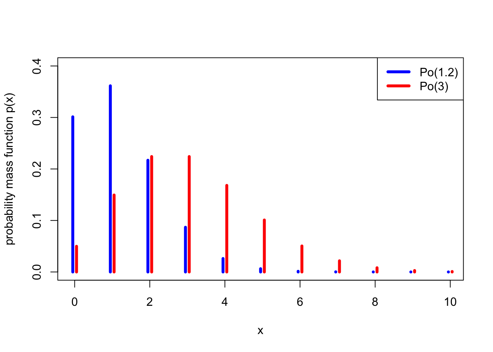
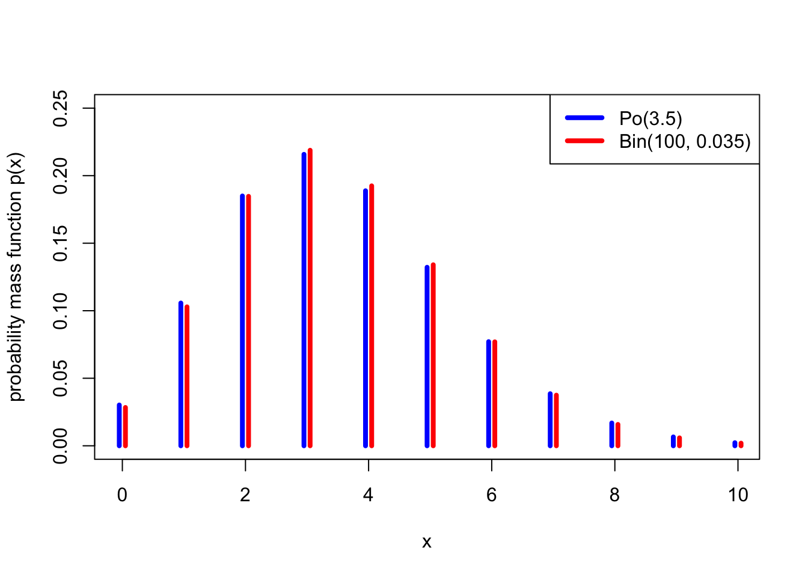

12 Poisson distribution
We have seen three important families of discrete random variables: the Bernoulli, binomial, and geometric distributions. We now look at our fourth and final discrete distribution: the Poisson distribution.
12.1 Definition and properties
Another important distribution is the Poisson distribution. The Poisson distribution (roughly “pwa-song”) is typically used to model “the number of times something happens in a set period of time”. For example, the number of emails you receive in a day; the number of claims at an insurance company each year; or the number of calls to call centre in one hour. (Famously, one of the first historical datasets modelled using a Poisson distribution was “the number of Prussian soldiers in different cavalry units kicked to death by their own horse between 1875 and 1894”.) We’ll explain why the Poisson distribution is a good model for this in the next subsection.
Let \(X\) be a discrete random variable with range \(\{0,1,2,\dots\}\) and PMF [ p_X(x) = e^{-} . ] Then we say that \(X\) follows the Poisson distribution with rate \(\lambda\), and write \(X \sim \text{Po}(\lambda)\).
Here, \(\lambda\) is a lower-case Greek letter “lambda”. I should also note that we interpret \(0! = 1\), so [ p(0) = e^{-} = e^{-} = e^{-} . ]
The Poisson distribution is named after the French mathematician Siméon-Denis Poisson who wrote about it in 1837, although the origin of the idea is more than 100 years earlier with another French mathematician, Abraham de Moivre.
I receive emails from students at the rate of \(\lambda = 3\) per hour, modelled as a Poisson distribution. What is the probability I get (a) two email in an hour, (b) no email in an hour?
The number of emails per hour is \(X \sim \mathrm{Po}(3)\).
For (a), we have [ P(X = 3) = p(3) = ^{-3} = ^{-3} = 0.224 . ]
For part (b), and remembering that \(0! = 1\), we have [ P(X = 3) = p(0) = ^{-3} = ^{-3} = 0.050 . ]
The parameter \(\lambda\) is called the “rate” because that indeed the number of emails (or insurance claims, or phone calls, or deaths by horse-kicking) that we expect to see.
Let \(X \sim \text{Po}(\lambda)\). Then
- \(p(x)\) is indeed a PMF, in that \(\displaystyle\sum_{x=0}^\infty p(x) = 1\).
- \(\mathbb EX = \lambda\),
- \(\Var(X) = \lambda\).
Proof. We’ll do the first two here, then you can do the variance in Problem Sheet 4.
It will be useful to remember the Taylor series for the exponential function, [ e^= _{x=0}^ . ]
For part 1, to see that the PMF does indeed sum to one, note that the Taylor series gives us [ {x=0}^p(x) = {x=0}e{-} = e^{-} _{x=0}^ = e{-},e{} = 1. ]
For part 2, for the expectation, we have \[\begin{align*} \mathbb EX &= \sum_{x=0}^\infty x\,\mathrm e^{-\lambda} \frac{\lambda^x}{x!} \\ &= \mathrm e^{-\lambda} \sum_{x=1}^\infty x\,\frac{\lambda^x}{x!} \\ &= \mathrm e^{-\lambda} \sum_{x=1}^\infty \frac{\lambda^x}{(x-1)!} \\ &= \lambda \mathrm e^{-\lambda} \sum_{x=1}^\infty \frac{\lambda^{x-1}}{(x-1)!} \end{align*}\] In the second line, we took \(\mathrm e^{-\lambda}\) outside the sum, and allowed ourselves to start the sum from 1, since the \(x = 0\) term was 0 anyway; in the third line, we cancelled the \(x\) from the \(x!\) to get \((x-1)!\); and in the fourth line we took one of the \(\lambda\)s in \(\lambda^x\) outside the sum, to give ourselves terms in \(x - 1\) inside the sum. We can now “re-index” the sum by putting \(y = x - 1\), to get [ EX = e^{-} _{y=0}^ = e^{-} e^{} = , ] where we used the Taylor series again.
At this point in the lecture, we took a break to fill in the mid-semester check-in survey. This is open for the rest of the week and is anonymous. Written comments in answer to the last question are particular useful – I will read them all and report back next week on changes I am making to the module in response to your comments.
12.2 Poisson approximation to the binomial
Suppose I own a watch shop in Leeds. My watches are very expensive, so I don’t need to sell many each day – in fact, I sell an average of 4.8 watches per day. How should I model the number of watches sold each day as a random variable?
One way could be to say this. There are \(n\) people living in Leeds or nearby, and, on any given day, each of them will independently buy a watch from my shop with some probability \(p\). Thus the total number of watches I sell could be modelled as a binomial distribution \(\text{Bin}(n, p)\).
But what should \(n\) and \(p\) be? To make the average \(\mathbb EX = np = 4.8\), I must take \(p = 4.8/n\). But what about \(n\)? We know \(n\) is a very big number, because Leeds is a big city, so let’s take a limit as \(n \to \infty\). It turns out, that this distribution \(\text{Bin}(n, 4.8/n)\) becomes a Poisson(4.8) distribution!
Fix \(\lambda \geq 0\), and let \(X_n \sim \text{Bin}(n, \lambda/n)\) for all integers \(n \geq \lambda\). Then \(X_n \to \text{Po}(\lambda)\) in distribution as \(n \to \infty\), by which we mean that if \(Y \sim \text{Po}(\lambda)\), then [ p_{X_n}(x) p_Y(x) . ]
A looser way to state the principle of this theorem would be this: When \(n\) is very large and \(p\) very small, in such a way that \(np\) is a small-ish number, then \(\text{Bin}(n,p)\) is well approximated by \(\text{Po}(\lambda)\) where \(\lambda = np\).
This is why a Poisson distribution is a good model for the number of occurrences in a set time period. It applies if there lots of things that could happen (large \(n\)), each one is individually unlikely (small \(p\)), and on average a few of them will actually happen (\(\lambda = np\) small-ish).
A lecturer teaches a module with \(n = 100\) students, and estimates that each student turns up to office hours drop-in sessions independently with probability \(p = 0.035\). What is the probability that (a) exactly 5, (b) 2 or more students turn up to a drop-in session?
If we let \(X\) be the number of students that turn up to a drop-in session, then the exact distribution of \(X\) is \(X \sim \text{Bin}(100, 0.035)\).
For part (a), we then have [ P(X = 5) = 0.035^5 (1 - 0.035)^{100-5} = 0.134 . ]
For part (b), we have an “at least” event, so we use the complement rule to get \[\begin{align*} \mathbb P(X \geq 2) &= 1 - \mathbb P(X = 0) - \mathbb P(X = 1) \\ &= 1 - \binom{100}{0} 0.035^0 (1 - 0.035)^{100-0} + \binom{100}{1} 0.035^1 (1 - 0.035)^{100 - 1} \\ &= 1 - (1 - 0.035)^{100} + 100 \times 0.035 (1 - 0.035)^{99} \\ &= 1 - 0.028 - 0.103 \\ &= 0.869 \end{align*}\]
Alternatively, it might be more convenient to approximate \(X\) by a Poisson distribution \(Y \sim \text{Po}(100 \times 0.035) = \text{Po}(3.5)\).
For part (a), this gives [ P(Y = 5) = e^{-3.5} = 0.132 , ] which is very close to the exact answer above of \(0.134\).
For part (b), the approximation gives \[\begin{align*} \mathbb P(Y \geq 2) &= 1 - \mathbb P(Y = 0) - \mathbb P(Y = 1) \\ &= 1 - \mathrm e^{-3.5} \frac{3.5^0}{0!} - \mathrm e^{-3.5} \frac{3.5^1}{1!} \\ &= 1 - \mathrm e^{-3.5} - 3.5 \mathrm e^{-3.5} \\ &= 1 - 0.030 - 0.106 \\ &= 0.864 \end{align*}\] which is very close to the exact answer above of \(0.869\).
The following graph shows how close the \(\text{Po}(3.5)\) distribution is to a \(\text{Bin}(100, 0.035)\) distribution – not exact, but pretty good.

For completeness, we include a proof of Theorem @ref(thm:po-bint) here, although since it discusses use of limits, it’s not examinable material for this module.
Proof. (Non-examinable) We need to show that, as \(n \to \infty\), [ p_X(x) = nx ()^x (1 - )^{n-x} ^{-} = p_Y(x) . ] Let’s try. The left-hand side is, by some simple rearrangements, \[\begin{align*} \binom nx &\left(\frac{\lambda}{n}\right)^x \left(1 - \frac{\lambda}{n}\right)^{n-x} \\ &= \frac{n(n-1)\cdots(n-x+1)}{x!} \frac{\lambda^x}{n^x} \left(1 - \frac{\lambda}{n}\right)^{n}\left(1 - \frac{\lambda}{n}\right)^{-x} \\ &= \frac{\lambda^x}{x!} \frac{n(n-1)\cdots(n-x+1)}{n^x} \left(1 - \frac{\lambda}{n}\right)^{n}\left(1 - \frac{\lambda}{n}\right)^{-x} \\ &= \frac{\lambda^x}{x!} \frac{n}{n} \frac{n-1}{n} \cdots \frac{n-x+1}{n} \left(1 - \frac{\lambda}{n}\right)^{n}\left(1 - \frac{\lambda}{n}\right)^{-x} \\ &= \frac{\lambda^x}{x!} 1 \left(1 - \frac{1}{n}\right) \cdots \left(1 - \frac{x-1}{n}\right) \left(1 - \frac{\lambda}{n}\right)^{n}\left(1 - \frac{\lambda}{n}\right)^{-x} . \end{align*}\]
Now let’s take each of the terms in turn. First \(\lambda^x / x!\) looks very promising, and can stay. Second, each of the terms \(1, 1 - 1/n, \dots, 1 - (x-1)/n\) tend to 1 as \(n \to \infty\). Third, [ (1 - )^{n} ^{-} ; ] this is from the standard “compound interest” result that [ (1 + )^{n} ^{a} . ] Finally [(1 - )^{-x} , ] as \(1 - \lambda/n \to 1\), and \(x\) is fixed. Putting all that together gives the result.
12.3 Poisson process
Suppose an insurance company’s call centre is open 10 hours a day, 5 days a week. The call centre receives a “large claim” – a claim in excess of £100,000 – on average 0.2 times per hour. It seems reasonable, therefore, to model the number of large claims in an hour as a \(\mathrm{Po}(\lambda)\) distribution with \(\lambda = 0.2\).
How should we model the nuber of large claims in a day? If the call centre receives \(\lambda = 0.2\) claims per hour, on average, then it receives \(10\lambda = 2\) claims per 10 hours, or one day. It seems reasonable to model this with a \(\mathrm{Po}(10\lambda)\) distribution.
Further, the number of claims on one day and on the next day seems like they should be independent.
The two ideas in the model above lead to what is called the “Poisson process”.
A random set of arrivals is said to follow a Poisson process with rate \(\lambda\) if
- The number of arrivals in a time period of length \(t\) is \(\mathrm{Po}(\lambda t)\).
- The number of arrivals in two non-overlapping time periods are independent.
Suppose the number of large claims, as discussed above, is modelled as a Poisson process with rate \(\lambda = 0.2\) claims per hour. What is the probability the call centre receives at least one large claim every day this week?
The number of large claims in one 10-hour day is \(X \sim \mathrm{Po}(10\lambda) = \mathrm{Po}(2)\). So the probability of getting at least one claim in a day is [ P(X ) = 1 - P(X = 0) = 1 - ^{-2} = 0.865 . ]
Because the number of claims in each of the five days this week are independent, the probability of getting at least one claim in all five days is [ P(X )^5 = 0.865^5 = 0.483 . ]
This is just a brief taster of the Poisson process. The Poisson process is studied in much more detail in the second-year module MATH2750 Introduction to Markov Processes.
Summary
| Distribution | Range | PMF | Expectation | Variance |
|---|---|---|---|---|
| Bernoulli: \(\text{Bern}(p)\) | \(\{0,1\}\) | \(p(0) = 1- p\), \(p(1) = p\) | \(p\) | \(p(1-p)\) |
| Binomial: \(\text{Bin}(n,p)\) | \(\{0,1,\dots,n\}\) | \(\displaystyle\binom{n}{x} p^x (1-p)^{n-x}\) | \(np\) | \(np(1-p)\) |
| Geometric: \(\text{Geom}(p)\) | \(\{1,2,\dots\}\) | \((1-p)^{x-1}p\) | \(\displaystyle\frac{1}{p}\) | \(\displaystyle\frac{1-p}{p^2}\) |
| Poisson: \(\text{Po}(\lambda)\) | \(\{0,1,\dots\}\) | \(\mathrm{e}^{-\lambda} \displaystyle\frac{\lambda^x}{x!}\) | \(\lambda\) | \(\lambda\) |